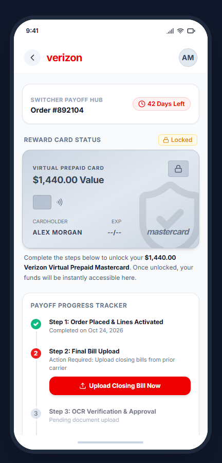
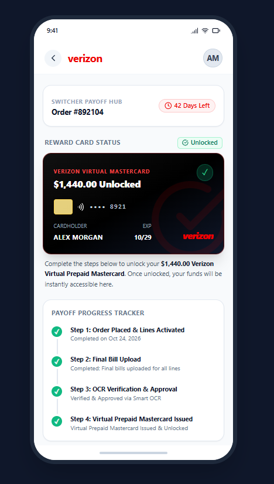

The Problem
THE MOMENT THAT STARTED IT ALL
When the problem became personal
Working as an Inside Sales Representative gave me a firsthand look at the customer experience beyond the initial sale. I encountered customers who believed their previously financed devices would be paid off, only to discover their reimbursement had not gone as expected.
Then a customer I had personally helped contacted me weeks after switching. They were facing that same problem. I hated knowing that someone I had assisted was now dealing with a financial obligation they hadn't anticipated. All I could do was direct them to the appropriate support channels.
What if the problem wasn't simply human error? What if the experience itself needed to be redesigned?
That question became the starting point for Operation Verizon. I wanted to explore a process that could protect customers from mistaken expectations while giving representatives a more reliable way to qualify offers.
Pressure to move quickly
Eligibility rules compete with call handling, customer questions, and order completion.
Expecting a straightforward payoff
A verbal promise may not communicate every requirement, limit, or post-sale action.
The Hypothesis
Looking beyond one customer
I started asking how many other customers had experienced the same confusion and how many representatives might have overlooked an important requirement. One question led to another, and a small investigation grew into a broader exploration of promotional eligibility, customer expectations, and reimbursement workflows.
My hypothesis: connecting eligibility verification, customer education, and acknowledgment in one guided experience could reduce avoidable mistakes before they become expensive problems.
I didn't want to redesign a disclosure in isolation. I wanted to address the gap between what happens during the sale and what the customer has to do afterward.
How might we…
- Help representatives verify eligibility without relying on memory?
- Make payoff caps and customer responsibilities understandable before checkout?
- Give customers a clear path from agreement to documentation and tracking?
The Compound
Research & business context
My frontline observations pointed to a mismatch between what customers hear during the sale and what they must do afterward. Secondary research adds context: billing, promotions, and rebate fulfillment are recurring sources of consumer dissatisfaction in telecommunications.
Complaint scale: The research set cites more than 38,800 Better Business Bureau complaints against Verizon over a three-year period. This is a broad, company-level complaint figure across multiple issues, not a count of switcher-payoff complaints. The underlying time window and source extract should be confirmed before publication as a verified statistic.
Regulatory risk: Unclear terms and disputed promotional expectations can create complaint and escalation exposure. This project does not attribute specific regulatory actions to this proposed flow.
Where the journey can break
- Eligibility: Offer-specific requirements may not be confirmed in a structured way.
- Expectation: Customers may assume the old carrier is paid directly.
- Documentation: A final bill and device installment details may be needed for the claim.
- Timing: Submission deadlines and reimbursement processing periods create a gap between switching and receiving funds.
- Resolution: Missing steps can turn into support contacts, disputes, and potentially lost trust.
Research notes reference three completed billing cycles, a 60-day submission period, and a 6–8 week prepaid-card timeline. These are offer-specific details to validate against the applicable promotional terms, not universal Verizon policy.
Rejection & Recovery Analysis
Direct interface observation: A September 2026 Verizon e-Gift Card rebate status screen shows an Invalid claim with the reason, “Your account type isn't eligible to receive this rebate.” The screen also provides detailed offer terms and a general Contact Us link.
What the interface does well: It communicates the claim outcome and provides a specific category of ineligibility. This corrects the broader assumption that Verizon always provides only generic rejection messages.
Where the experience could improve: The message does not identify the account classification or explain whether the customer can review, dispute, or correct the issue. The visible next step is a general support link rather than a claim-specific resolution path.
Invalid: account type ineligible
A reason is visible, but the customer must interpret the terms and determine the next action.
Explain the decision and the next step
Clarify the eligibility mismatch and offer a policy-appropriate review or support route without promising an override.
Evidence scope: this example concerns a $200 Verizon e-Gift Card promotion, not a device-payoff claim. It supports an interface-level observation about rejection communication, not a claim that every Verizon rebate has the same workflow. A redacted screenshot is retained as a research artifact pending inclusion in the portfolio.
Financial exposure: illustrative scenario
The following model explores the scale of a potential retention problem. It is a scenario, not measured Verizon loss or a tested design outcome.
At an assumed $315–$400 acquisition cost per account, those 500 accounts also represent approximately $157,500–$200,000 in acquisition investment. Support and escalation costs could add further exposure. These components should not be combined into a realized loss without accounting for retention duration, recoverability, and overlap.
Design implication: Even modest improvements to comprehension and claim completion could matter at scale. Testing is required to estimate actual impact.
The failure point I wanted to address was not just a rejected claim. It was the gap between what was communicated during the sale and what the customer needed to do afterward. That led me to design for both sides of the conversation.
The Formula
Two interfaces. One shared understanding.
I designed the concept around two connected touchpoints: a representative-facing internal system and a customer-facing co-browse agreement. The information stays consistent, but the controls change according to who is using the screen.
Confirm installment tenure, enter estimated balances, and calculate the potential reimbursement and uncovered amount.
See locked eligibility values, read the requirements, and accept or decline the payoff agreement.
See the agreement outcome, upload the closing bill, and follow the proposed claim progress experience.
Interactive state logic
| Component | Sales representative | Customer co-browse |
|---|---|---|
| Eligibility and caps | Editable tenure confirmation and estimated balances | Locked values labeled as verified by the representative |
| Instructions and timeline | Read-only talking guide | Read-only upload steps and offer-specific deadline |
| Disclosures and sign-off | Waiting for customer acknowledgment | Interactive checkboxes; sign action disabled until both are checked |
Making errors harder to make
I chose a required qualification step because I wanted to do more than remind representatives of the rules. In a fast-paced sales environment, a small oversight can have significant consequences. My goal was to make the right action easier than the wrong one, without creating unnecessary friction.
Creating a shared understanding
People process and remember information differently. I wanted customers to see the terms while hearing them explained, rather than relying entirely on a verbal conversation. The acknowledgment gives both people a clear moment to review the requirements before proceeding.
This is an independent conceptual workflow using synthetic example values. Offer-specific requirements must be confirmed against applicable terms. The internal system is not named or connected to production services.
The Reaction
Designing what happens after the decision
The agreement does not end with a single sign button. I designed separate states for customers who accept the payoff promotion and those who choose to continue without it.
Agreement signed
The confirmation summarizes the example $1,440 estimated payoff, the stated upload deadline, and the proposed prepaid-card delivery method. It also directs customers toward the agreement and tracking information.
Promotion removed
The decline state makes the consequences explicit: $0 payoff reimbursement, the previous-carrier balance remaining the customer's responsibility, and a choice to return or continue with a standard port-in.
I didn't want the customer to feel forced into accepting the payoff promotion just to complete their order. Declining needed to be a valid choice, but the financial consequences had to be unmistakable.
POST-SALE EXPERIENCE / TWO INTERACTION STATES
From Pending to Payoff
I wanted customers to see the potential reward at the beginning of the journey, while making it clear that they still had steps to complete. The payoff hub connects the reward to a visible progress tracker, then provides a distinct completion state after the simulated claim process finishes.

The card remains locked. A countdown and checklist direct the customer to upload their previous carrier's closing bill.

All four milestones show completion, and the card changes to its unlocked state after the simulated approval and issuance steps.
Making the reward feel within reach
I placed the locked reward card near the top because I wanted customers to see what they were working toward. Instead of presenting a long list of requirements with an uncertain reward at the end, the design makes the goal visible and connects it to clear next steps. As each requirement is completed, the tracker reinforces that progress.
Both screens show original conceptual prototype states with synthetic customer data. The document verification and reward issuance shown here are simulated interactions, not a live approved claim or available funds.
What I would test next
I would test whether customers understand who pays the previous carrier, identify the correct installment document, and recognize the deadline. For representatives, I would test whether the required qualification steps fit naturally into a real sales conversation. No usability results are claimed yet.
The Transformation
Designing for impact beyond the interface
My initial motivation was helping customers, but I also saw the potential business value. More reliable qualification and clearer post-sale guidance could reduce avoidable disputes, protect trust, and improve the efficiency of customer support.
I don't measure good design only by how polished the screens look. I want to know whether the experience helps people complete their tasks and whether it creates value for the organization supporting them.
Business impact: what I would measure
These are research-supplied baseline estimates and proposed targets, not measured Verizon outcomes. They establish a framework for a future pilot and evaluation.
Estimated baseline → proposed target
Estimated baseline → proposed target
Estimated baseline → proposed target
Measure cohort churn against a verified baseline
The figures above have not been independently validated against internal reporting. Reducing errors does not guarantee lower churn or specific financial savings; those outcomes would require controlled measurement.
Lab Notes
I design for the whole experience
Operation Verizon taught me that small design decisions can have consequences far beyond the screen where they happen. What began as concern for one customer became an opportunity to explore an entire service experience.
I found myself thinking about the representative, the customer, the supporting systems, the business, and every moment connecting them. I realized that I'm a big-picture designer. I don't just want to design for one side of the interaction. I want to understand the whole experience and how its parts work together.
Being close to the front line has given me a perspective I might not have gained otherwise. While I continue growing toward product and experience design, I want to use that perspective to identify problems worth solving. Number transfers are another area I'd like to explore because I've seen how confusing that process can be for customers.
Sometimes the most meaningful design opportunities begin with a problem we care enough to investigate.
Project boundaries: This is an independent conceptual UX project, not officially endorsed by Verizon Communications Inc. Mockup screens and customer examples use synthetic data; research observations are separate. No proprietary internal code is represented. Prototype behaviors and business targets are not live outcomes.
Evidence: The project draws on frontline observations and secondary research. Complaint patterns, promotional conditions, and financial estimates require source-level verification before being presented as established facts.